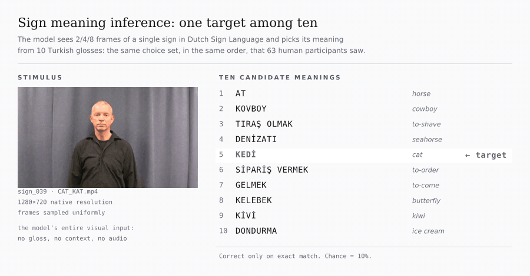
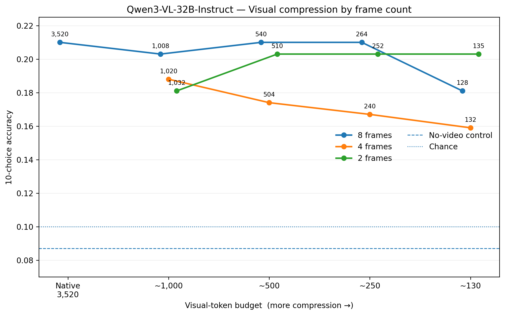
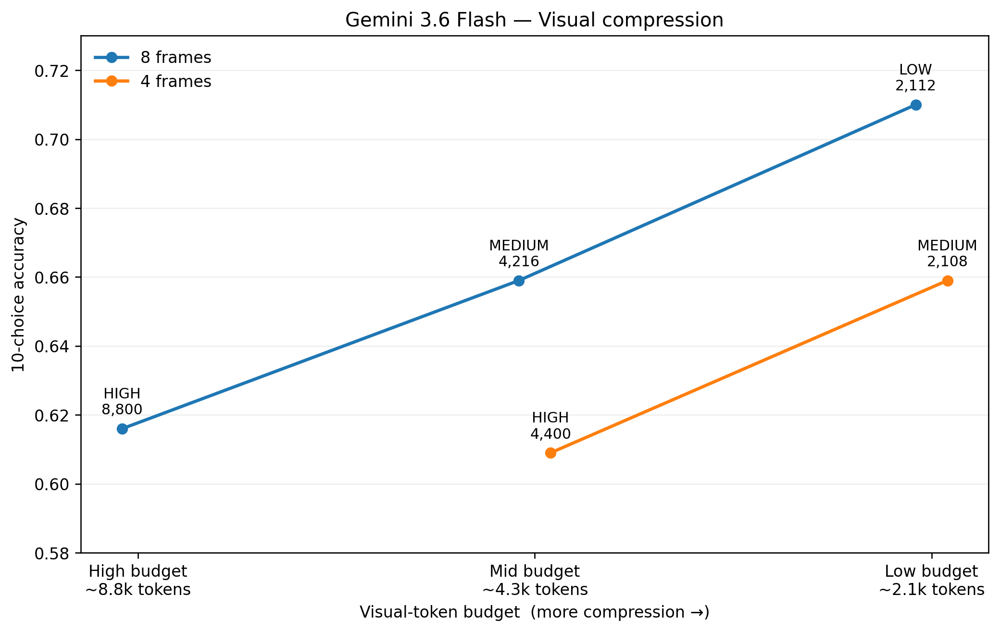

Exploring Query-Aware Multimodal Context Compression
Motivation and Prior Work
Following our conversation about query-aware compression for multimodal documents, I ran a small set of visual-token experiments over the weekend. The preliminary results suggest that multimodal compression may be better framed as an information-allocation problem: not only deciding what visual evidence to retain, but also how to distribute a limited visual budget across time, space, and resolution. Long-context systems increasingly ingest PDFs, screenshots, images, and video alongside text. This improves coverage but makes the visual context expensive: dense image grids and repeated video frames create many tokens whose relevance depends on the downstream query. Text compression already treats this as an information-selection problem. LLMLingua-2, for example, and (probably) the latte models by Compresr distill supervision from a strong LLM and train a small encoder to classify which text tokens should be retained, reducing context while preserving task performance [1].
Visual compression is apparently an active area as well. Recent methods prune redundant visual tokens, use language guidance to retain query-relevant evidence, or adapt the pruning budget by instance and layer [2, 4]. For video, PruneVid removes spatial/temporal redundancy and query-irrelevant tokens [3], while Vista-LLM explicitly introduces query-guided dynamic budgeting and temporal allocation before inference [5]. These results establish that visual inputs are highly compressible, and recent work already demonstrates query-guided and adaptive visual-token selection. The direction I find particularly interesting is broader than token pruning itself: a model-agnostic, input-space controller that operates before a downstream VLM API and jointly decides which pages, images, regions, or frames to send and at what fidelity. Such a system could work with both open and proprietary models without requiring access to internal attention states or visual embeddings. Modern APIs already expose useful control surfaces; for example, Gemini 3 allows per-media resolution settings that directly trade visual tokens for detail [6].
Preliminary Experiment: Visual Budget vs. Task Accuracy
I tested whether visual-token allocation can be reduced without losing the information needed for a concrete multimodal task. The benchmark contains 138 visually iconic sign videos that our team at the Max Planck Institute collected with our Deaf colleague, together with a 10-choice meaning-identification task (chance = .10). The prompt and candidate meanings were held fixed; only the visual evidence was compressed. I evaluated Qwen3-VL-32B-Instruct and Gemini 3.6 Flash with thinking disabled.

Since this is a video-understanding task, compression was manipulated along two independent axes: temporal coverage (8, 4, or 2 sampled frames) and spatial fidelity / token budget. For Qwen, I varied spatial resolution to create progressively smaller total visual-token budgets while keeping the sampled frames fixed. For Gemini, the API's media-resolution setting controlled the per-frame visual allocation. Thus, matched total budgets can be spent on many low-detail frames or fewer high-detail frames.
Qwen: large redundancy without measurable loss. Native 8-frame input used 3,520 visual tokens and achieved .210 accuracy. Note that this is a difficult task for current open-source VLMs because it requires inferring an abstract meaning from visual form rather than simply recognizing visible objects. At only 264 tokens, accuracy remained .210—a 13.3× reduction with no observed loss. Crucially, no-video (.087) and mismatched-video (.080) controls were significantly below native performance, showing that the model was extracting useful information from the video despite its low absolute accuracy. This is best interpreted as evidence of substantial visual redundancy rather than as a claim that extreme compression is universally optimal.
Gemini: lower visual allocation improved accuracy in this setting. With 8 frames, reducing observed image tokens from 8,800 (HIGH) to 2,112 (LOW) reduced visual input by approximately 76% while accuracy increased from .616 to .710 (+9.4 percentage points; paired McNemar p = .011). More importantly, token count alone did not determine performance. At approximately the same 2.1–2.2k-token budget, 8f/LOW achieved .710 accuracy, compared with .659 for 4f/MEDIUM and .638 for 2f/HIGH. This suggests that how a visual budget is allocated can matter as much as its total size. For this task, broader temporal coverage appears more useful than maximizing per-frame spatial detail.

(a) Qwen3-VL-32B-Instruct
(b) Gemini 3.6 FlashToward Query-Aware Multimodal Allocation
These preliminary results suggest a more useful objective than simply pruning as many visual tokens as possible. Visual context compression can instead be treated as information allocation: given a query, preserve the cheapest representation that retains the evidence required for the downstream task.
query + multimodal context -> lightweight controller -> compressed context -> VLM
The controller's action space can include: (i) KEEP/DROP pages, images, regions, or frames; (ii) LOW/MEDIUM/HIGH fidelity; (iii) query-relevant crops or regions of interest; (iv) OCR/text-only substitution when pixels add little; and (v) dynamic allocation between temporal coverage and spatial detail. This keeps the system deployable with proprietary APIs because it modifies the input, rather than requiring access to internal visual embeddings.
The Gemini result does not imply that low resolution should always be used. Tasks involving OCR, fine-grained diagrams, small objects, or spatial localization may require substantially more visual detail. The central hypothesis is therefore that the optimal compression policy is query-dependent rather than globally low-resolution.
How to train it. The compressor can be trained as a lightweight policy that predicts how much visual information a query needs. For each training example, we create a few possible inputs, such as 2, 4, or 8 frames at LOW, MEDIUM, or HIGH resolution. We run a strong teacher or the downstream VLM on each one and choose the cheapest version that still gives the correct answer or nearly matches the full input. This choice becomes the training label. A compact controller, with a cheap visual encoder, query encoder, and small policy head, then learns to make the same choice from the query and inexpensive visual features. In the simplest version, this is ordinary supervised classification. The costly search over different inputs happens only when creating the training data; at inference time, the controller chooses one representation and the VLM runs once. A more advanced version could also add a cost term to the objective, for example L = Ltask + λLdistill + βLbudget, to directly reward cheaper visual inputs.
How to test it. A key question is whether the controller learns to choose different inputs for different information needs. On the same visual inputs, we could compare object recognition, fine-detail or OCR, and document-style questions, and examine how the selected frame counts and resolutions vary. Beyond the sign language dataset, it may be useful to include tasks that are likely to favor different compression strategies. For example, DocVQA, InfographicVQA, and OCR-VQA may benefit more from HIGH resolution, while temporal video QA datasets such as Perception Test or NExT-QA may place greater value on seeing more frames than on preserving fine detail in each frame. If the controller instead converges on nearly the same settings across these tasks, that would also be an informative result. The learned policy could then be compared with simple baselines such as fixed LOW resolution, uniform resizing, random or uniform frame sampling, and saliency-based selection. Results could show the tradeoff between task quality and billed visual tokens, latency, and cost. A further practical question is whether the same query-aware input layer can reduce inference cost across multiple open and proprietary VLMs, rather than being tied to a single model architecture.
- Z. Pan et al. LLMLingua-2: Data Distillation for Efficient and Faithful Task-Agnostic Prompt Compression. Findings of ACL, 2024.
- X. Ye et al. ATP-LLaVA: Adaptive Token Pruning for Large Vision Language Models. CVPR, 2025.
- X. Huang, H. Zhou, and K. Han. PruneVid: Visual Token Pruning for Efficient Video Large Language Models. Findings of ACL, 2025.
- H. Zhang et al. TrimTokenator: Towards Adaptive Visual Token Pruning for Large Multimodal Models. Findings of ACL, 2026.
- Z. Li et al. Vista-LLM: Decoupled Query-Guided Visual Token Pruning for Efficient Long-Video Large Language Models. ACL, 2026.
- Google. Gemini API: Media resolution. Documentation, updated July 2026.